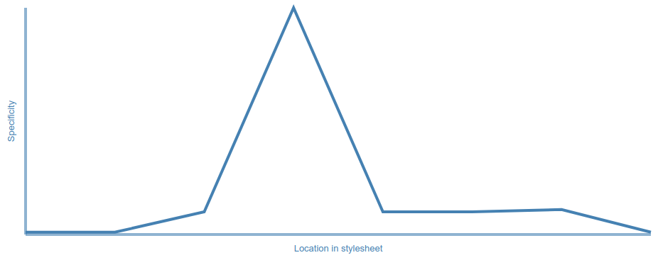
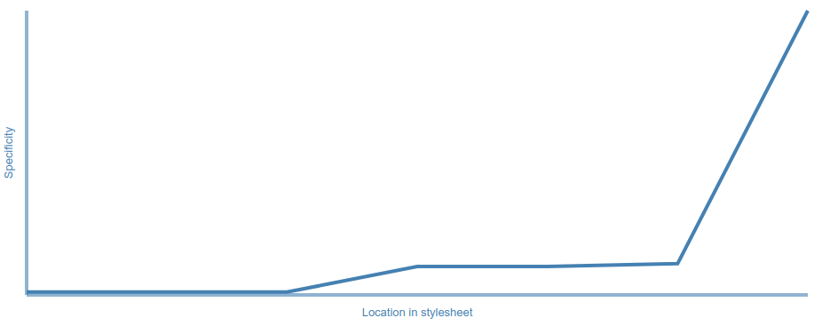
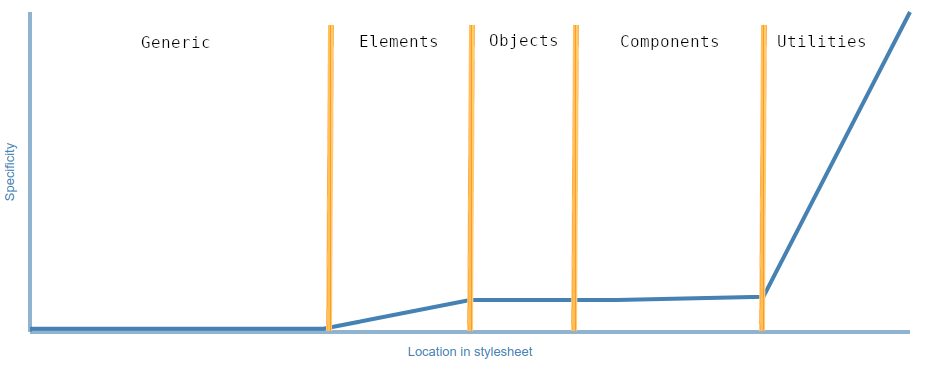

Upgrade Your CSS
Part 2: ITCSS
Problems
Problems with CSS
CSS can seem quirky.
- Everything's global
- Something you write could affect another page; and another page could affect what you're writing.
- Very dependant on source order
- Generally, what's written last is what's applied, so we need to be careful about order of styles.
- Specificity can override source order
- It can be tricky to see what styles will be applied before they're on the page.
Problems with Developers
Let's face it, we're not perfect.
- Varying code style
- Two things may look the same but work differently, or be written differently.
- A way of unifying coding style would be useful.
- Developers never write documentation
- If we all write to the same mentality then we shouldn't need it.
- Every team members will write some CSS
- Everyone knows at least some CSS. We need a system that's easy to explain so we know what to write and where.
- Skill levels vary so we need a system that can separate out the difficult bits.
Without ITCSS
When we write CSS, we usually start at the top of the design.
This is very human-readable, but the browser doesn't work like that so why should we?
It also creates a new problem.
Imagine that this box is the compiled CSS.


This is how we end up with CSS bloat. The style sheet's a mess and we don't know what anything does or where anything is.
We have CSS chaos.
Causes of CSS Chaos:
- Mismanaged CSS specificity.
- Writing CSS in an impractical order.
- Writing styles that are too opinionated too early on.
Specificity
CSS selectors have strength that can determine which rules are applied. More complicated selectors have a higher strength or specificity.
When we write, we should take specificity into account. Because we usually write CSS in the order of the design, the specificity is all over the place.
body { } /* 0, 0, 0, 1 */
a { } /* 0, 0, 0, 1 */
.class-1 { } /* 0, 0, 1, 0 */
#id { } /* 0, 1, 0, 0 */
.class-2 { } /* 0, 0, 1, 0 */
input[type="text"] { } /* 0, 0, 1, 1 */
button { } /* 0, 0, 0, 1 */
Because specificity is represented by numbers, we can plot them on a graph
If we want to add anything, we usually add it to the end.
If we have a conflict, we either need a higher specificity or we have to do horrible things with !important.
... or we have to re-write something, but let's be honest - that never happens.
A better solution would be to know that specificity always trends upwards.
Now we know where to put new styles if we want to add anything.
We can take this a step further and label these sections so we have a better idea of what to put where.
| Generic | resets/normalise. Widely available but low specificity. These are probably identical across multiple projects. |
|---|---|
| Elements | Styles HTML elements such as <a> or <h1> without a class on them. |
| Objects | First layer where we add some classes. Structured styles, layout and simple rules that position other things |
| Components | This is the UI and usually the biggest part of the style sheet. We add the layer that users would think of when we say "the styles" here. |
| Utilities | Hacks or simple changes. This is the only layer where we can use !important. |
The Inverted Triangle
This triangle represents the compiled style sheet, like the rectangle earlier.
Whenever you add new styles to the page, ask yourself how opinionated the style is.
If it's very opinionated then it needs to be very explicit, so the specificity should be higher and the style should be lower down in the style sheet.
If the style should reach a lot of elements then it needs a low specificity so it shouldn't be very opinionated.
If you solve 2 sides of the triangle, the third one will be solved for you.
| Generic |
Should have a low specificity and low explicitness so it can reach a lot of elements.
Examples include styles like * { margin: 0 }
|
|---|---|
| Elements |
Needs to reach specific elements - a only reaches <a> elements, for example.
It has a naturally higher specificity so it can be a little more opinionated. For example, it can define the font-size for every <h1> element.
|
| Objects |
Built from classes so have an even higher specificity than elements.
They lay out elements or reset things like list styles. They're a little more opinionated but still should be very easy to override if we need to. |
| Components |
These describe a module and there are probably only 1 or 2 on the page at a time.
Since these define the "style" of the website, they're very opinionated - they include things like color.
As a result, they need a higher specificity (or at least be after the objects). |
|---|---|
| Utilities |
These surgical classes will only affect 1 element on the page, if that.
Their reach is very limited but we need them to be highly opinionated and prevent other things changing them. |
The Sculptor Metaphor
A good way of thinking about this is to imagine a sculptor carving a statue.
- They get a large slab of marble from a quarry, blown our of the side of a cliff using explosives.
- The block is taken to a stone mill who'd make it a sensible shape, like a cuboid, using heavy-duty, industrial tools.
- The sculptor takes a large hammer and chisel to get the basic shape of the statue.
- As the sculptor wants more detail, they use smaller and smaller tools and get more precise.
A sculptor wouldn't go up to a cliff with a small hammer and chisel to carve out the perfect finger before moving onto the perfect hand.
That would be a very weird way of working and if anything went wrong, they'd have to start again.
In the same way, we shouldn't build CSS like that.
Extending the Triangle
The Inverted Triangle is designed to be extended. Compare the specificity, explicitness and reach of any layer you want and add it to the appropriate place.
| Variables | Preprocessor variables that can reach every element. |
|---|---|
| Mixins | These may use the variables, so they're more specific even though they're not creating any CSS. |
| Generic | General styles. |
| Elements | Style elements generically. |
| Objects | Help layout the page. |
| Components | The main modules that users see. |
| WYSIWYG | Because the client will want to change parts of the page but won't want to use complicated markup like classes, these are more specific than either elements or components. |
| Utilities | Overrides and hacks, as we need them. |